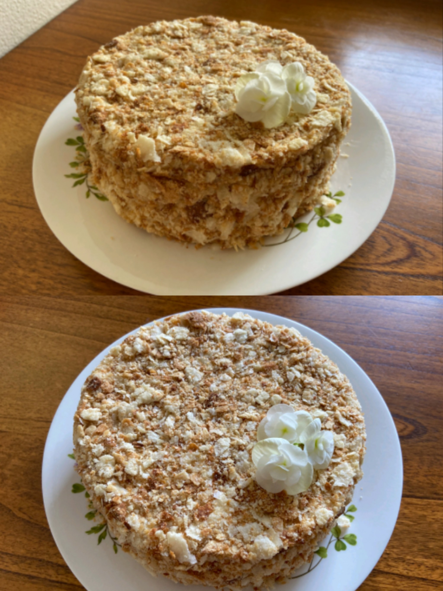

Napoleon

Ingredients:
Cake:
- Eggs - 1
- Unsalted Butter- - 400gr
- Flour - 4 cups
- Vinegar- 1 tsp 9%
- Ice water - 1 cup
Cream:
- Heavy wipping cream - 200ml
- Milk - 400ml
- Egg - 1
- Strach - 40gr
- Sugar - 200gr
- Unsalted Butter - 100gr
Filling:
- If you want Berry Napoleon you can add in layers of jam or berry confiture
Instractions:
- To prepare puff pastry need to add the egg and vinegar to a glass of ice water. In a bowl, add 4 cups of flour and grind with butter until large crumbs, then add a glass of egg mixture.Put the resulting dough in the refrigerator after 10-12 hours. After it is divided into 10 parts and each is rolled into a circle 3-5 mm thick. Place each layer in the oven at 425 F, bake for about 5-7 minutes. Let cool.
- To prepare a cream, eggs, milk, sugar and fear put in a strach and bring to a boil, but do not boil, then add the butter to the hot mixture and stir until smooth. Let cool. We need to wip heavy wipping cream with mixture to stable peaks.
Cake assembly:
Coat each layer with cream and spread over each other. The whole cake is also lubricated with cream. Grind the last cake to crumbs and print on the cake.